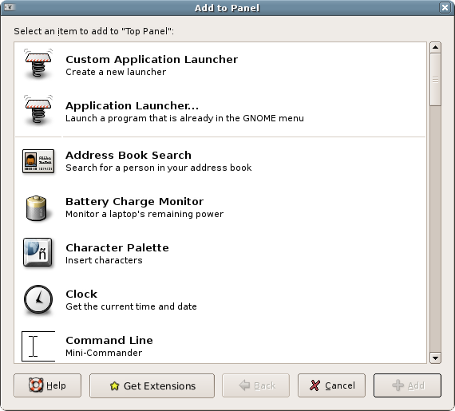
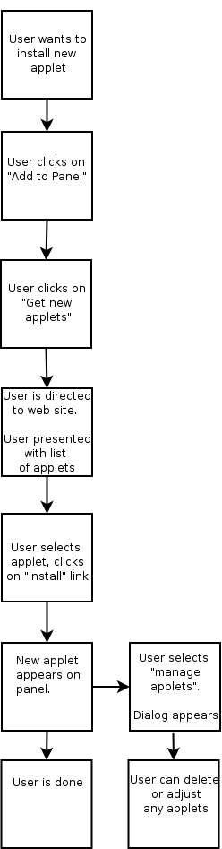
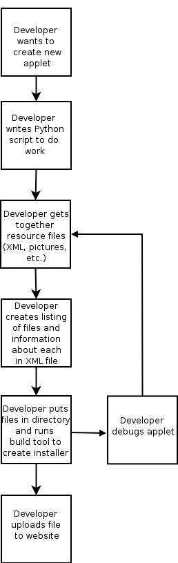
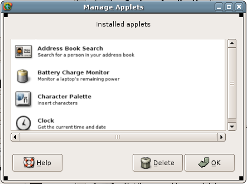

Overview
This project will implement a new kind of widget to display on the GNOME 2 gnome-panel that can be installed by an end user of GNOME.
Currently, users wishing to install new "applets" must have some knowledge of the inner workings of gnome-panel (that is, they must have some knowledge of bonobo .server files and also know the correct places in the file system to install various pieces of the applet). As a result, the main method of applet distribution is inclusion in a debian package or RPM.
We would like to implement a system similar to Mozilla Firefox and Thunderbird extensions, in which developers can easily create a single, user executable(? FIXME? ) file to install new applets.
Scenarios
Scenario 1
Norm, a gardener, loves GNOME, and he especially loves the GNOME panel. Since switching to Linux a year ago, he has greatly appreciated the familiar concept of a "taskbar" and desktop menus, but he also likes the easy customizability and number of applets included with his favorite Linux distribution.
One day, Norm finds "The Gardener" on his favorite GNOME website. The Gardener is a panel applet that will let him monitor the PH of his garden from his wireless laptop. This is great news for Norm, since he currently needs to go outside to do this. Unfortunately, The Gardener is not included in Norm's distribution packages, and the documentation on The Gardener's website is absolutely atrocious.
Norm decides that his dream of easy PH monitoring will remain just that. The next time he updates his operating system, however, he notices a new feature in the GNOME panel "Add new applets" dialog.
Norm clicks on "Get new applets" and is directed to a web page with a list of GNOME panel applets including a new version of The Gardener. FIXME? Norm clicks on a link for a new page with a detailed description of The Gardener and an "install" link. Norm clicks on the install link and gets a dialog box confirming that he wants to install The Gardener. Norm hits "yes", and immediately sees "The Gardener" pop up on one of the panels.
In later versions, it would be nice if the new applet appeared on the panel that the user clicked on to get the context menu. For the first version, however, it will probably just appear on the first (root) panel.
Scenario 2
Toby, a power user who switched to Linux several years ago, has decided he'd like to get into developing for GNOME. As a first project, Toby decides to write a simple gnome-panel applet. He finds a good PyGTK tutorial, as well as some specifics on writing gnome-panel applets. After a week of reading and coding, Tony has a functioning applet which allows users to interface with GardenPro brand PH monitors and display the output from the device on the GNOME panel.
Toby sets up a nice website for his new applet, The Gardener, and makes a tar file containing the source code and appropriate .server files. Toby leaves brief installation instructions in an INSTALL file within the archive, and submits the code to a maintainer for the gnome-applets package. The maintainer, unfortunately, doesn't think The Gardener really fits with the rest of the applets in the package, and rejects poor Toby's submission. At about the same time, school starts and Toby's work load picks up. As a result, development on The Gardener essentially ceases.
A couple months later Toby reads about a new system for user installable gnome panel extensions. Toby reads some information on the new system, and easily converts The Gardener to the new format manually. He then uses a utility to build The Gardener into a single file which he uploads to panelextensions.gnome.org. As part of the upload process, panelextensions.gnome.org gathers some information about the file and creates an install link that users can click on to install The Gardener. Hundreds of users use Toby's applet, to rave reviews.
Toby is revitalized and becomes a code machine, eventually leading the charge to make GNOME the premier desktop environment in the world.
Scenario 3
Norm (our now happy gardener) is approaching mid-life and decides he no longer wants to be a gardener. In fact, Norm would like to get rid of everything that reminds him of his old life, buy a motorcycle and ride into the sunset. In order to do this, Norm would like to remove The Gardener and install a new applet that displays information about his bike via Bluetooth.
Norm right-clicks on the panel, selects "Manage applets" and is presented with a screen listing all the applets Norm has installed from panelextensions.gnome.org. Norm clicks on The Gardener and hits delete. After a confirmation dialog, Norm gets a message that The Gardener has been successfully removed from the system.
Norm next finds his way once again to panelextensions.gnome.org and finds exactly what he is looking for, an applet called "Big Bike Bluetooth Buddy" (BBBB). Norm goes through the same process he went through to install The Gardener and is happy to see BBBB pop right up on his GNOME panel. Norm has a problem, however, since BBBB is initially configured for a BabyBike 900, something Norm would never be caught dead riding. Norm right clicks on the applet and selects "Preferences" from the context menu that pops up. In a selection box on the screen that pops up, Norm finds his KingHog 10000, hits "OK" and is delighted to see information about his bike display on the screen.
Scenario 4
After a couple years, the rough and tumble life of a biker begins to wear Norm down. Wanting to settle down and retire, Norm decides to become a professional open source developer. Since he's had such good luck with GNOME, Norm decides to develop a GNOME panel applet to display the size of his retirement account. Norm finds a tutorial on developing GNOME panel applets that can be posted on panelextensions.gnome.org and learns some Python and XML.
Norm first writes a Python script to interface with his bank's online banking system. He uses Inkscape to create a nice icon for his applet and creates an appropriate .server file for bonobo. Norm then creates a configuration file using XML which specifies the role of each piece, including appropriate install locations and other relevant information about how the pieces should work together.
"other relevant information about how the pieces should work together" is rather vague, and should be clarified. I would greatly appreciate the input of anyone with some experience in this kind of this regarding what kinds of information should be included in this kind of configuration file. One thing I do want to try to do is keep the configuration file as simple as possible. Listing each piece and a little information about each piece should be just about right. The question is, what kind of information? Thanks!
Norm now places all of the files for his applet into a directory and runs the gnome-extension-bundle-builder (Gebb?). Gebb finds the configuration file and packs all of the pieces into a single file, probably either a zip file or an XML file.
We would like to be able to include any number of different types of files in these bundles. Input on choice of bundle format (XML vs. zip vs. ??) would be greatly appreciated.
Once Norm finishes creating a bundle, he uploads it to panelextensions.gnome.org. The scripts on panelextensions.gnome.org automatically detect some information about the applet and prompts Norm for any information it would like that it cannot detect automatically.
Ideally Norm will be able to sign his applets before uploading them, but this will probably not be present in the first version.
Non-goals
- We will not provide 100% backwards compatibility. Existing applets will still use the current installation system, though ideally some of the existing applets will be ported to the new system. The first release will not include ports of existing applets.
- We will not support languages other than Python for the first release. Using a scripting language for our applets will provide excellent portability and make development easy. This will hopefully encourage novel applications. Support for other languages can be added later.
User Experience Flow Chart |
Developer Experience Flow Chart |
|
|  |  |
Manage Applets Dialog
When Norm the GNOME user clicks on "Manage Applets" on the GNOME panel context menu, he sees a dialog allowing him to manage his GNOME panel extensions.
From this dialog, Norm can delete applets from his computer, adjust applet preferences (which he should also be able to do from the context menu for the applet's display on the GNOME panel), view a list of installed applets, and click on a button to access panelextensions.gnome.org.
Applet Structure
Applets will consist of three parts:
- Resource files like images, XML (glade files, schemas, etc), and anything else developers would like to use.
- A Python script. Future support could be added for other scripting languages, but scripting languages will probably be the only ones supported. Users should not need to have build tools installed to install applets.
- A "manifest," or some kind of file, probably written in XML, to tie the pieces together and give instructions to the installer.